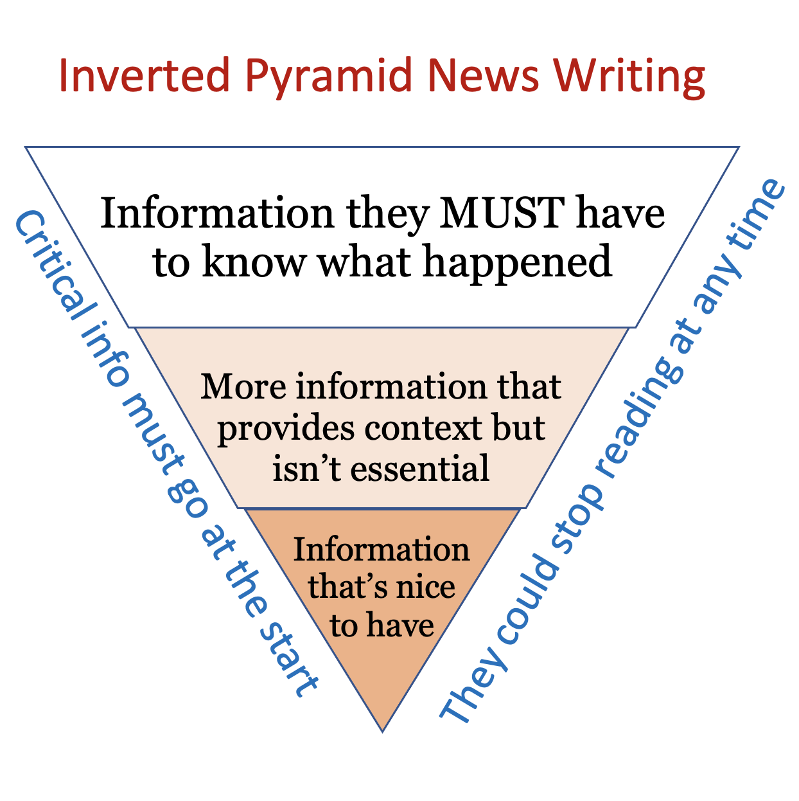
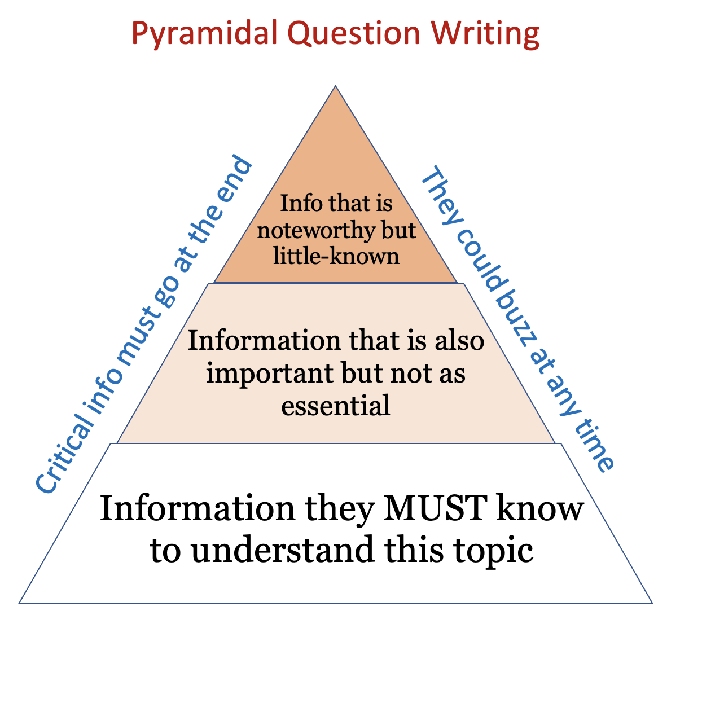

30-20-10 is a good start, but it comes with some limitations. You'll notice that it is very discrete- that is, broken up into distinct parts. The reader has to pause after each clue, which makes the game less exciting and slow. What if there was a way to keep the best parts of 30-20-10 while preserving the fast-paced nature of the game?
And this is what brings us to the pyramid, quizbowl's central innovation. Before I explain the pyramid, I want to introduce a similar concept: the inverted pyramid. In journalism, the inverted pyramid is a model for writing articles that is designed to respect the time of the reader. It recommends stating the most important facts about an event first, so that the reader will be informed even if they are in a rush. After that, the article will fill in the rest of the articles with details. Now the details at the end of an article are still newsworthy- otherwise they wouldn't be there at all! But they are undoubtedly less foundational to understanding the subject at hand. In this way, everything in a news article is based on the premise that the reader could stop reading at any time.
Quizbowl turns that model on its end. The quizbowl "pyramidal" model is based on the premise that a player could buzz in at any time, and they should be forced to answer based on the minimum necessary information. Ideally, a player should be in the dark until a clue that they know jumps out at them. In order to accomplish this, the most foundational information is placed at the end while the details are placed at the beginning. This allows the question to act like 30-20-10, only with a more continuous flow of play.
If this is still too abstract, let's look at an example. Here's a CNN article about the Unite the Right rally in Charlottesville.
Violence erupted in the college town of Charlottesville on Aug. 12 after hundreds of white nationalists and their supporters who gathered for a rally over plans to remove a Confederate statue were met by counter-protesters, leading Virginia’s governor to declare a state of emergency.
Clashes broke out between the white nationalists and counter-protesters; the “Unite the Right” rally at a park once named for Confederate Gen. Robert E. Lee was deemed unlawful. At one point in the afternoon, a vehicle drove into a crowd of counter-protesters marching through the downtown area before speeding away, resulting in one death and leaving more than a dozen others injured. State police later reported the crash of a helicopter that was monitoring the events in Charlottesville, killing two troopers.
President Trump addressed the violence in televised remarks from New Jersey, condemning an “egregious display of hatred, bigotry and violence on many sides” and calling for the “swift restoration of law and order.” Among his critics was Sen. Ron Wyden of Oregon. “What happened in Charlottesville is domestic terrorism,” Wyden tweeted. “The President’s words only serve to offer cover for heinous acts.”
The night before Saturday’s violence, hundreds of white nationalists marched through the University of Virginia campus while carrying burning torches.
— Andrew Katz (CNN)
Next, let's look at a modern quizbowl question (a tossup) on the same event.
A report by Timothy J. Heaphy sharply criticized the response to this event, which caused Kenneth Frazier and several CEOs to resign from a manufacturing council. In a Vice News video from this event, Christopher Cantwell remarked “I go to the gym all the time.” After this event, a clip from the short film Don’t Be a Sucker was shared by Keith Ellison. The Internet discovered the identities of a hot dog stand worker in Berkeley and a man in an “Arkansas Engineering” shirt who participated in this event. The phrase “very fine people on both sides” referenced participants in this event, where Heather Heyer was killed in a hit-and-run. During this event, a tiki torch-wielding mob surrounded a statue of Robert E. Lee in Emancipation Park. For 10 points, identify this August 2017 white supremacist rally held near the University of Virginia.
ANSWER: Unite the Right rally [accept any answers that mention a rally or protest taking place in Charlottesville or the University of Virginia; prompt on far-right or white supremacist rally by asking “At where?”] (2018 ACF Regionals)
The comparison isn't perfect, but I'm sure you can see the resemblance. Both questions mention that the event was a white supremacist rally in a college town. They both mention that the rally was related to a statue of Robert E. Lee. They both reference a deadly hit-and-run. They both mention the former president's remarks. And as promised, the information is delivered in opposite orders. In the newspaper article, the more foundational stuff comes first. In the quizbowl question, the more foundational stuff comes last. The most major difference is that the quizbowl question has to be more evasive about the subject in question to avoid revealing the answer.
A good summary of how these frameworks relate to each other can be found in the images below:


An interesting plus of this structure is accessibility: even though pyramidal questions target a certain skill level, players below that skill level can still compete on those same questions. Because what matters is not if you get the question, but when. Accessibility is solidified by the giveaway, a final clue denoted by "For ten points" that is meant to be converted by any team with basic knowledge of the subject.
So at long last, the problem of fast-paced knowledge differentiation was (mostly) solved. But this left a problem: quizbowl is meant to be a team game. How are teams supposed to work together in this format? The answer is that they can't, and so a new form of quizbowl question was necessary. The 30-20-10 format will make a return in Part III: The Bonus.